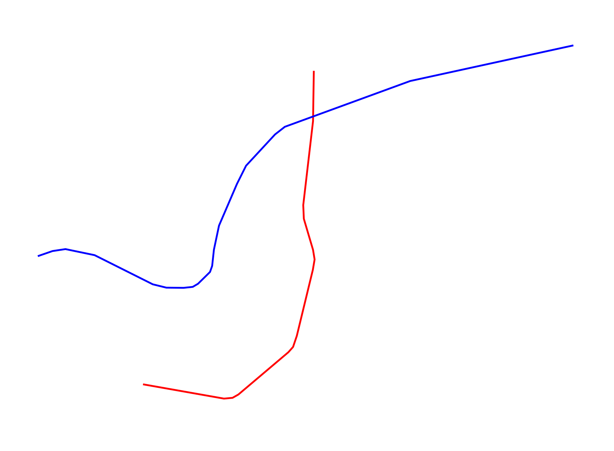

One-off Rapid Transit Maps for Scale Comparison
Disneyworld Honolulu 2025
Honolulu 2025 La Paz
La Paz Pyongyang
Pyongyang Seattle 2025

Based on frequent midday service at the end of the year in question (notes). Scale 10 CSS pixels per km.
Please send any corrections or questions to threestationsquare at gmail dot com.
See also: rapid transit timelines - miscellaneous timelines
By Alexander Rapp based on map data
 by OpenStreetMap contributors.
by OpenStreetMap contributors.